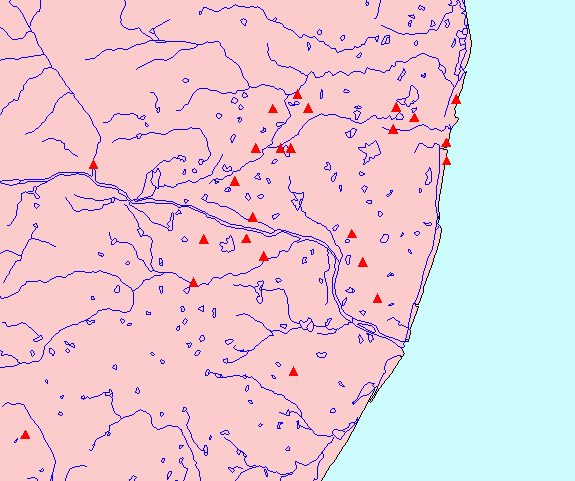

Map of Tēvāram sites (5: Toṇṭai Nāṭu)

Toṇṭai Nāṭu (TON): 33 talam-s
- TON_001:kacci ēkampam
- TON_002:kaccimēṟṟaḷi
- TON_003:ōṇakāntaṉtaḷi
- TON_004:kacci aṉēkataṅkāvatam
- TON_005:kaccineṟik kāraikkāṭu
- TON_006:kuraṅkaṇil muṭṭam
- TON_007:mākaṟal
- TON_008:ōttūr
- TON_009:(vaṉ) pārttāṉ paṉaṅkāṭṭūr
- TON_010:vallam
- TON_011:māṟpēṟu
- TON_012:ūṟal
- TON_013:ilampaiyaṅ kōṭṭūr
- TON_014:viṟkōlam
- TON_015:ālaṅkāṭu
- TON_016:pācūr
- TON_017:veṇpākkam
- TON_018:kaḷḷil
- TON_019:kāḷatti
- TON_020:oṟṟiyūr
- TON_021:valitāyam
- TON_022:mullaivāyil (vaṭa)
- TON_023:vēṟkāṭu
- TON_024:mayilāppūr
- TON_025:vāṉmiyūr
- TON_026:kaccūr
- TON_027:iṭaiccuram
- TON_028:kaḻukkuṉṟam
- TON_029:acciṟupākkam
- TON_030:vakkarai
- TON_031:aracili
- TON_032:irumpai mākāḷam
- TON_033:kiḷiyaṉṉavūr